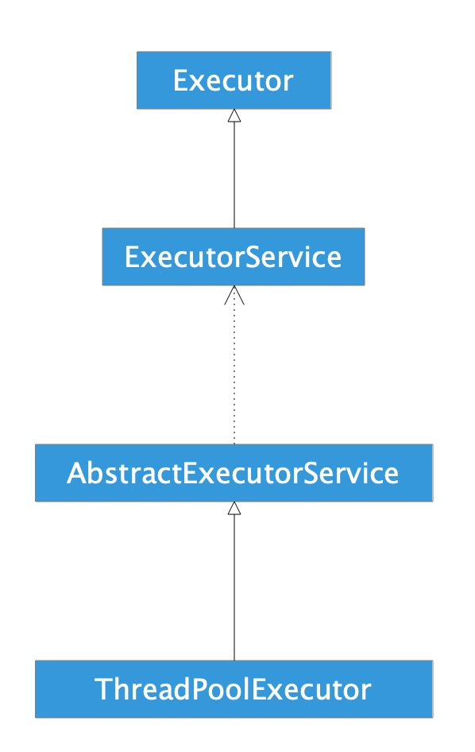

1. 线程池简单使用
- shutDown()，关闭线程池，需要执行完已提交的任务；
- shutDownNow()，关闭线程池，并尝试结束已提交的任务；
- allowCoreThreadTimeOut(boolen)，允许核心线程闲置超时回收；
- execute()，提交任务无返回值；
- submit()，提交任务有返回值；
1.1. 示例
public class Main {
public static void main(String[] args) {
ExecutorService service = Executors.newCachedThreadPool();
for (int i = 0; i < 5; i++) {
service.execute(new MyRunnable());
}
List<Future<Long>> futures = new ArrayList<>();
for (int i = 0; i < 5; i++) {
futures.add(service.submit(new MyCallable()));
}
for (int i = 0; i < 5; i++) {
try {
System.out.println(futures.get(i).get());
} catch (ExecutionException | InterruptedException e) {
e.printStackTrace();
}
}
service.shutdown();
}
private static class MyRunnable implements Runnable {
@Override
public void run() {
System.out.println("Runnable:" +
Thread.currentThread().getName() +
"##" + System.currentTimeMillis());
}
}
private static class MyCallable implements Callable<Long> {
@Override
public Long call() {
System.out.println("Callable:" +
Thread.currentThread().getName() +
"##" + System.currentTimeMillis());
return System.currentTimeMillis();
}
}
}
log
Runnable:pool-1-thread-1##1567044193328
Runnable:pool-1-thread-5##1567044193328
Runnable:pool-1-thread-4##1567044193328
Runnable:pool-1-thread-2##1567044193328
Runnable:pool-1-thread-3##1567044193328
Callable:pool-1-thread-5##1567044193329
Callable:pool-1-thread-4##1567044193329
Callable:pool-1-thread-1##1567044193329
Callable:pool-1-thread-2##1567044193329
Callable:pool-1-thread-3##1567044193329
1567044193329
1567044193329
1567044193329
1567044193329
1567044193329
2. 线程
一般实现线程的方法有两种，一种是类继承Thread，一种是实现接口Runnable。这两种方式的优缺点如何呢？
Java是单继承但可以调用多个接口，所以看起来Runnable更加好一些。
继承Thread
class MyThread extends Thread(){
@Override
public void run() {
super.run();
Log.i(Thread.currentThread().getId());
}
}
new MyThread().start();
实现Runnable接口
class MyThread implements Runnable{
@Override
public void run() {
Log.i("MyThread", Thread.currentThread().getName());
}
}
MyThreaed myThread = new MyThread();
new Thread(myThread).start();
当调用Thread时，会有两种方式：
Thread myThread = new Thread();
myThread.run();
myThread.start();
run()方法只是调用了Thread实例的run()方法而已，它仍然运行在主线程上，而start()方法会开辟一个新的线程，在新的线程上调用run()方法，此时它运行在新的线程上。
Runnable只是一个接口，所以单看这个接口它和线程毫无瓜葛。Thread调用了Runnable接口中的方法用来在线程中执行任务。
public interface Runnable {
public void run();
}
public interface Callable<V> {
V call() throws Exception;
}
而Thread类只支持Runnable接口，由此引入FutureTask的概念。
3. 线程池相关类介绍
3.1. Executor
public interface Executor {
void execute(Runnable command);
}
Executor是一个接口内部只有一个execute方法，用来运行Runnable对象。
在此接口的文档中提到，这个接口的作用是负责运行Runnable任务，并不保证异步执行。
此接口虽然是线程池框架中的一员，但是本身与线程没有关联。
3.2. Runnable
public interface Runnable {
void run();
}
描述任务，没有返回值。
3.3. ExecutorService
public interface ExecutorService extends Executor {
void shutdown();
List<Runnable> shutdownNow();
boolean isShutdown();
boolean isTerminated();
boolean awaitTermination(long timeout, TimeUnit unit) throws InterruptedException;
<T> Future<T> submit(Callable<T> task);
<T> Future<T> submit(Runnable task, T result);
Future<?> submit(Runnable task);
<T> List<Future<T>> invokeAll(Collection<? extends Callable<T>> tasks) throws InterruptedException;
<T> List<Future<T>> invokeAll(Collection<? extends Callable<T>> tasks, long timeout, TimeUnit unit) throws InterruptedException;
<T> T invokeAny(Collection<? extends Callable<T>> tasks) throws InterruptedException, ExecutionException;
<T> T invokeAny(Collection<? extends Callable<T>> tasks, long timeout, TimeUnit unit) throws InterruptedException, ExecutionException, TimeoutException;
}
ExecutorService是描述线程池内部机制的一个接口。提供了开启和关闭线程池的方法，以及能够运行带有返回值的任务。
shutdown和shutdownNow的区别
- shutdown调用后，不可以再submit新的task，已经submit的将继续执行。
- shutdownNow试图停止当前正执行的task，并返回尚未执行的task的list
3.4. Callable
public interface Callable<V> {
V call() throws Exception;
}
与Runnable相似，带有返回值。
3.5. Future
public interface Future<V> {
boolean cancel(boolean mayInterruptIfRunning);
boolean isCancelled();
boolean isDone();
V get() throws InterruptedException, ExecutionException;
V get(long timeout, TimeUnit unit) throws InterruptedException, ExecutionException, TimeoutException;
}
Future描述的是一个任务运行结果的情况，如任务是否被取消、任务完成后的返回值。
3.6. ThreadFactory
public interface ThreadFactory {
Thread newThread(Runnable r);
}
ThreadFactory线程工厂，创建线程的。
3.7. ThreadPoolExecutor
以上都是对线程池的抽象描述，ThreadPoolExecutor才是线程池的真正实现。ThreadPoolExecutor见分析。
3.8. Executors
Executors内部提供了默认的线程工厂，以及一些具体的线程池
FixedThreadPool：
- 线程数量固定（需用户指定），当线程处于空闲状态也不会被回收，除非线程池被关闭。
- 只有核心线程，并且没有超时机制，另外任务队列没有大小限制。
CachedThreadPool：
- 线程数量不定，只有非核心线程，最大的线程数为Integer.MAX_VALUE
- 空闲线程具有超时机制，超过60秒就会被回收。
- 适合大量耗时少的任务。
ScheduledThreadPool：
- 核心线程数量固定，非核心线程没有限制，非核心线程闲置时会被立即回收。
- 主要用于执行定时任务和具有固定周期的重复任务。
SingleThreadExecutor：
- 只有一个核心线程，确保所有的任务都在同一个线程按顺序执行
- 意义在于统一所有的外界任务到一个线程，使得不需要处理同步问题。
3.9. FutureTask
FutureTask 实现了 Runnable 和 Future，所以兼顾两者优点，既可以在 Thread 中使用，又可以在 ExecutorService 中使用。
public interface Future<V> {
boolean cancel(boolean mayInterruptIfRunning);
boolean isCancelled();
boolean isDone();
V get() throws InterruptedException, ExecutionException;
V get(long timeout, TimeUnit unit)
throws InterruptedException, ExecutionException, TimeoutException;
}
使用 FutureTask 的好处是 FutureTask 是为了弥补 Thread 的不足而设计的，它可以让程序员准确地知道线程什么时候执行完成并获得到线程执行完成后返回的结果。FutureTask 是一种可以取消的异步的计算任务，它的计算是通过 Callable 实现的，它等价于可以携带结果的 Runnable，并且有三个状态：等待、运行和完成。完成包括所有计算以任意的方式结束，包括正常结束、取消和异常。
4. 类关系图

5. ThreadPoolExecutor分析
5.1. 构造方法
public ThreadPoolExecutor(int corePoolSize,
int maximumPoolSize,
long keepAliveTime,
TimeUnit unit,
BlockingQueue<Runnable> workQueue) {
this(corePoolSize, maximumPoolSize, keepAliveTime, unit, workQueue, Executors.defaultThreadFactory(), defaultHandler);
}
public ThreadPoolExecutor(int corePoolSize,
int maximumPoolSize,
long keepAliveTime,
TimeUnit unit,
BlockingQueue<Runnable> workQueue,
ThreadFactory threadFactory) {
this(corePoolSize, maximumPoolSize, keepAliveTime, unit, workQueue, threadFactory, defaultHandler);
}
public ThreadPoolExecutor(int corePoolSize,
int maximumPoolSize,
long keepAliveTime,
TimeUnit unit,
BlockingQueue<Runnable> workQueue,
RejectedExecutionHandler handler) {
this(corePoolSize, maximumPoolSize, keepAliveTime, unit, workQueue, Executors.defaultThreadFactory(), handler);
}
public ThreadPoolExecutor(int corePoolSize,
int maximumPoolSize,
long keepAliveTime,
TimeUnit unit,
BlockingQueue<Runnable> workQueue,
ThreadFactory threadFactory,
RejectedExecutionHandler handler) {
if (corePoolSize < 0 ||
maximumPoolSize <= 0 ||
maximumPoolSize < corePoolSize ||
keepAliveTime < 0)
throw new IllegalArgumentException();
if (workQueue == null || threadFactory == null || handler == null)
throw new NullPointerException();
this.corePoolSize = corePoolSize;
this.maximumPoolSize = maximumPoolSize;
this.workQueue = workQueue;
this.keepAliveTime = unit.toNanos(keepAliveTime);
this.threadFactory = threadFactory;
this.handler = handler;
}
5.2. 参数解释
- int corePoolSize：该线程池中核心线程数最大值 核心线程：线程池新建线程的时候，如果当前线程总数小于corePoolSize，则新建的是核心线程，如果超过corePoolSize，则新建的是非核心线程。核心线程默认情况下会一直存活在线程池中，即使这个核心线程啥也不干(闲置状态)。 如果指定ThreadPoolExecutor的allowCoreThreadTimeOut这个属性为true，那么核心线程如果不干活(闲置状态)的话，超过一定时间(时长下面参数决定)，就会被销毁掉。
- int maximumPoolSize：该线程池中线程总数最大值 线程总数 = 核心线程数 + 非核心线程数。
- long keepAliveTime：该线程池中非核心线程闲置超时时长 一个非核心线程，如果不干活(闲置状态)的时长超过这个参数所设定的时长，就会被销毁掉，如果设置allowCoreThreadTimeOut = true，则会作用于核心线程。
- BlockingQueue workQueue：该线程池中的任务队列，维护着等待执行的Runnable对象
当所有的核心线程都在干活时，新添加的任务会被添加到这个队列中等待处理，如果队列满了，则新建非核心线程执行任务。
常用的workQueue类型：
- SynchronousQueue 这个队列接收到任务的时候，会直接提交给线程处理，而不保留它，如果所有线程都在工作怎么办？那就新建一个线程来处理这个任务！所以为了保证不出现“线程数达到了maximumPoolSize而不能新建线程”的错误，使用这个类型队列的时候，maximumPoolSize一般指定成Integer.MAX_VALUE，即无限大。
- LinkedBlockingQueue 这个队列接收到任务的时候，如果当前线程数小于核心线程数，则新建线程(核心线程)处理任务；如果当前线程数等于核心线程数，则进入队列等待。由于这个队列没有最大值限制，即所有超过核心线程数的任务都将被添加到队列中，这也就导致了maximumPoolSize的设定失效，因为总线程数永远不会超过corePoolSize
- ArrayBlockingQueue 可以限定队列的长度，接收到任务的时候，如果没有达到corePoolSize的值，则新建线程(核心线程)执行任务，如果达到了，则入队等候，如果队列已满，则新建线程(非核心线程)执行任务，又如果总线程数到了maximumPoolSize，并且队列也满了，则发生错误
- DelayQueue 队列内元素必须实现Delayed接口，这就意味着你传进去的任务必须先实现Delayed接口。这个队列接收到任务时，首先先入队，只有达到了指定的延时时间，才会执行任务
- ThreadFactory threadFactory 创建线程的方式，这是一个接口，new的时候需要实现的Thread newThread(Runnable r)方法。
- RejectedExecutionHandler handler
当提交任务数超过maxmumPoolSize+workQueue之和时，任务会交给RejectedExecutionHandler来处理；jdk1.5提供了四种饱和策略 ：
- AbortPolicy 默认。直接抛异常。
- CallerRunsPolicy 只用调用者所在的线程执行任务，重试添加当前的任务，它会自动重复调用execute()方法
- DiscardOldestPolicy 丢弃任务队列中最久的任务。
- DiscardPolicy 丢弃当前任务。
5.3. 提交任务
可以向ThreadPoolExecutor提交两种任务：Callable和Runnable。
- Callable 该类任务有返回结果，可以抛出异常。 通过submit函数提交，返回Future对象。 可通过get获取执行结果。
- Runnable 该类任务只执行，无法获取返回结果，并在执行过程中无法抛异常。 通过execute提交。
5.4. 关闭线程池
关闭线程池有两种方式：shutdown和shutdownNow，关闭时，会遍历所有的线程，调用它们的interrupt函数中断线程。但这两种方式对于正在执行的线程处理方式不同。
- shutdown() 仅停止阻塞队列中等待的线程，那些正在执行的线程就会让他们执行结束。
- shutdownNow() 不仅会停止阻塞队列中的线程，而且会停止正在执行的线程。
demo log：
08:21:13.288 27249-27562 first runnable start
08:21:13.668 27249-27249 线程池shutdown
08:21:15.289 27249-27562 first runnable end
08:21:15.289 27249-27562 second runnable start
08:21:17.291 27249-27562 second runnable end
08:27:02.681 29525-29848 first runnable start
08:27:03.116 29525-29525 shutdownNow
08:27:03.116 29525-29525 shutdownNow [MyRunnable{tag='second'}]
08:27:03.116 29525-29848 first 线程被打断
08:27:03.116 29525-29848 first runnable end
上部分是shutdown，正在执行和已经在队列中的任务会继续执行。
下部分是shutdownNow，会停止正在执行的线程，并且返回未执行的任务。
5.5. 设置合理的线程池大小
任务一般可分为：CPU密集型、IO密集型、混合型，对于不同类型的任务需要分配不同大小的线程池。
- CPU密集型任务 尽量使用较小的线程池，一般为CPU核心数+1。 因为CPU密集型任务使得CPU使用率很高，若开过多的线程数，只能增加上下文切换的次数，因此会带来额外的开销。
- IO密集型任务 可以使用稍大的线程池，一般为2*CPU核心数。 IO密集型任务CPU使用率并不高，因此可以让CPU在等待IO的时候去处理别的任务，充分利用CPU时间。
- 混合型任务 可以将任务分成IO密集型和CPU密集型任务，然后分别用不同的线程池去处理。 只要分完之后两个任务的执行时间相差不大，那么就会比串行执行来的高效。 因为如果划分之后两个任务执行时间相差甚远，那么先执行完的任务就要等后执行完的任务，最终的时间仍然取决于后执行完的任务，而且还要加上任务拆分与合并的开销，得不偿失。
6. Callable原理
Callable的实现原理主要是ExecutorService的submit的实现原理。
基本使用
private void test2() {
Callable<String> callable = new MyCallable("mezzsy");
Future<String> future = getSingleThreadPool().submit(callable);
try {
String res = future.get();
Log.i(TAG, "test2: " + res);
} catch (ExecutionException | InterruptedException e) {
e.printStackTrace();
}
}
6.1. AbstractExecutorService#submit
public Future<?> submit(Runnable task) {
if (task == null) throw new NullPointerException();
RunnableFuture<Void> ftask = newTaskFor(task, null);
execute(ftask);
return ftask;
}
public <T> Future<T> submit(Callable<T> task) {
if (task == null) throw new NullPointerException();
RunnableFuture<T> ftask = newTaskFor(task);
execute(ftask);
return ftask;
}
protected <T> RunnableFuture<T> newTaskFor(Callable<T> callable) {
return new FutureTask<T>(callable);
}
ExecutorService会将Runnable和Callable封装成一个FutureTask。execute会执行FutureTask的run方法。
6.2. FutureTask的构造
public FutureTask(Callable<V> callable) {
if (callable == null)
throw new NullPointerException();
this.callable = callable;
this.state = NEW;
}
public FutureTask(Runnable runnable, V result) {
this.callable = Executors.callable(runnable, result);
this.state = NEW;
}
public static <T> Callable<T> callable(Runnable task, T result) {
if (task == null)
throw new NullPointerException();
return new RunnableAdapter<T>(task, result);
}
private static final class RunnableAdapter<T> implements Callable<T> {
private final Runnable task;
private final T result;
RunnableAdapter(Runnable task, T result) {
this.task = task;
this.result = result;
}
public T call() {
task.run();
return result;
}
}
FutureTask的构造是对Callable和Runnable的封装，对于Runnable，是将其包装成返回指定结果的Callable。
6.3. 执行
上面说到，execute会执行FutureTask的run方法，FutureTask的run方法就是执行callable的call方法。
FutureTask的get方法就是等待call方法执行完，然后返回结果。
7. 几个类/接口的关系
- Runnable（接口）表示一个不带返回结果的可执行任务
- Callable（接口）表示一个带返回结果的可执行任务
- Future（接口）表示一个可执行任务的执行情况
- RunnableFuture（接口）继承Runnable和Future，表示一个不带返回结果的可执行任务及其执行情况。
- FutureTask（类）实现了RunnableFuture，是对Runnable和Callable的封装，用于可执行任务及其执行情况。
8. 如何停止Java线程
8.1. stop
/**
* 测试停止Java线程
* 用stop的方式停止
*/
private static void testStopThread() {
MyThread thread = new MyThread();
thread.start();
try {
Thread.sleep(1000);
} catch (InterruptedException e) {
e.printStackTrace();
}
thread.stop();
System.out.println("End");
}
public static class MyThread extends Thread {
@Override
public void run() {
while (true) {
System.out.println("run");
try {
Thread.sleep(1000);
} catch (InterruptedException e) {
e.printStackTrace();
}
}
}
}
run
End
Process finished with exit code 0
经测试，线程可以被停止。
8.2. interrupt + return
public static class MyThread2 extends Thread {
public static void test() {
MyThread2 thread = new MyThread2();
thread.start();
thread.interrupt();
System.out.println("End");
}
@Override
public void run() {
while (!isInterrupted()) {
System.out.println("run");
}
System.out.println("interrupt");
}
}
End
interrupt
8.3. interrupt + throw
public static class MyThread3 extends Thread {
public static void test() {
MyThread3 thread = new MyThread3();
thread.start();
thread.interrupt();
System.out.println("Main End");
}
@Override
public void run() {
try {
while (true) {
if (isInterrupted()) {
throw new InterruptedException();
}
System.out.println("run");
}
} catch (InterruptedException e) {
System.out.println("throw InterruptedException");
e.printStackTrace();
}
}
}
Main End
throw InterruptedException
java.lang.InterruptedException
at com.mezzsy.javademo.experiment.TestConcurrent$MyThread3.run(TestConcurrent.java:30)
8.4. 总结
- 线程调用stop方法会被暴力停止，该方法已弃用。该方法有可能使一些请理性的工作得不到完成。
- 调用interrupt标记为中断状态后，在run方法中判断当前线程状态，如果为中断状态则return，能达到停止线程的效果。
- 用“抛异常”的方法来实现线程的停止，因为在catch块中还可以将异常向上抛，使线程停止的事件得以传播。
9. 参考
- Java线程池-ThreadPoolExecutor原理分析与实战，Zach_ZSZ，https://blog.csdn.net/z_s_z2016/article/details/81674893。